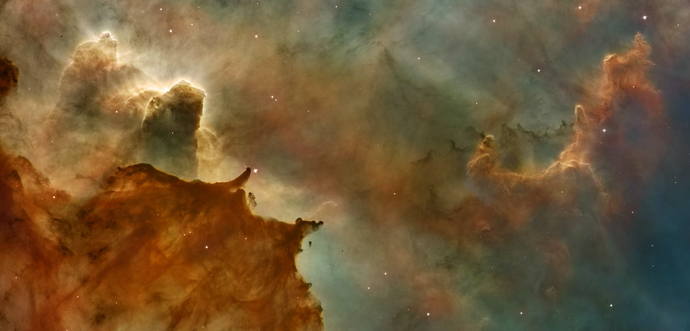

Definições
Tipo de Letra
Cor do Site
Image de Fundo do Menu


A Voyager 1 é uma sonda espacial lançada pela NASA a 5 de setembro de 1977, como parte do programa Voyager para estudar o Sistema Solar externo e o espaço interestelar além da heliosfera solar. Lançada 16 dias após sua irmã gémea, a Voyager 2, a Voyager 1 operou por 43 anos e 9 meses em 5 de junho de 2021 UTC e ainda comunica com a Deep Space Network para receber comandos de rotina e transmitir dados para a Terra. Os dados de distância e velocidade em tempo real são fornecidos pela NASA e a JPL. A uma distância de 152,2 UA (22,8 bilhões de km; 14,1 mil milhões de milhas) da Terra a 31 de maio de 2021, é o objeto feito pelo homem mais distante da Terra.
Um buraco negro é um lugar no espaço onde a gravidade atrai tanto que nem mesmo a luz consegue sair. A gravidade é muito forte porque a matéria foi comprimida num espaço minúsculo. Isto pode acontecer quando uma estrela está a morrer.
Como nenhuma luz pode sair, as pessoas não podem ver os buracos negros. Eles são invisíveis. Telescópios espaciais com ferramentas especiais podem ajudar a encontrar buracos negros. As ferramentas especiais podem ver como é que as estrelas que estão muito perto de buracos negros agem de maneira diferente de outras estrelas.
Albert Einstein, (nascido a 14 de março de 1879, Ulm, Württemberg, Alemanha - morreu a 18 de abril de 1955, Princeton, New Jersey, EUA), físico alemão que desenvolveu as teorias gerais e especiais da relatividade e ganhou o Prémio Nobel de Física em 1921 graças à sua explicação sobre o efeito fotoelétrico. Einstein é geralmente considerado o físico mais influente do século XX.
As ondas gravitacionais são 'ondulações' no espaço-tempo causadas por alguns dos processos mais violentos e energéticos do Universo. Albert Einstein previu a existência de ondas gravitacionais em 1916 com a teoria da relatividade. A matemática de Einstein mostrou que objetos massivos em aceleração (como estrelas de neutrões ou buracos negros orbitando à volta uns dos outros) perturbariam o espaço-tempo de tal forma que 'ondas' do espaço-tempo se propagariam em todas as direções longe da fonte. Essas ondulações cósmicas viajariam à velocidade da luz, levando com elas informações sobre suas origens, bem como pistas sobre a natureza da própria gravidade.
Os olhos humanos podem ver apenas uma pequena parte da variedade de radiação emitida pelos objetos ao nosso redor. Chamamos a essa ampla variedade de radiação do espectro eletromagnético, e a parte que podemos ver "luz visível".
Por ver apenas a luz visível, perdemos a informação transmitida por outros tipos de radiação. Outras criaturas da Terra podem ver parte do espectro para o qual somos cegos. Certos peixes, rãs-touro e cobras, por exemplo, podem ver a radiação infravermelha, que os ajuda a encontrar presas em águas turvas ou no escuro. Borboletas e algumas espécies de pássaros podem ver a luz ultravioleta, o que os ajuda a identificar certas marcas nos parceiros.
Quando se trata de objetos cósmicos, as informações-chave são reveladas por diferentes partes do espectro eletromagnético. Os telescópios são projetados para capturar diferentes partes desse espectro, fornecendo mais informações do que o olho humano poderia detectar por conta própria.
A teoria do Big Bang é o modelo cosmológico predominante do universo observável desde os primeiros períodos conhecidos até à sua evolução subsequente em grande escala. O modelo descreve como o universo se expandiu de um estado inicial de alta densidade e temperatura e oferece uma explicação abrangente para uma ampla variedade de fenómenos observados, incluindo a abundância de elementos de luz, a radiação cósmica de fundo em micro-ondas (CMB) e a estrutura em grande escala.
Crucialmente, a teoria é compatível com a lei de Hubble-Lemaître - a observação de que quanto mais distantes as galáxias estão, mais rápido elas se afastam da Terra. Extrapolando essa expansão cósmica para trás no tempo usando as leis conhecidas da física, a teoria descreve um cosmos cada vez mais concentrado precedido por uma singularidade em que o espaço e o tempo perdem significado (tipicamente chamado de "singularidade do Big Bang"). Medidas detalhadas da taxa de expansão do universo colocam a singularidade do Big Bang a cerca de 13,8 mil milhões de anos atrás, que é considerada a idade do universo.
O DNA, ou ácido desoxirribonucléico, é o material hereditário em humanos e em quase todos os outros organismos. Quase todas as células do corpo de uma pessoa têm o mesmo DNA. A maior parte do DNA está localizada no núcleo da célula (onde é chamado de DNA nuclear), mas uma pequena quantidade de DNA também pode ser encontrada na mitocôndria (onde é chamada de DNA mitocondrial ou mtDNA). As mitocôndrias são estruturas dentro das células que convertem a energia dos alimentos para uma forma que as células conseguem usar.
A seleção natural é o processo pelo qual as populações de organismos vivos se adaptam e mudam. Os indivíduos numa população são naturalmente variáveis, o que significa que são todos diferentes em alguns aspectos. Essa variação significa que alguns indivíduos possuem características mais adequadas ao ambiente do que outros. Indivíduos com características adaptativas - características que lhes dão alguma vantagem - têm maior probabilidade de sobreviver e de se reproduzir. Esses indivíduos, então, passam as características adaptativas para seus descendentes. Com o tempo, essas características vantajosas tornam-se mais comuns na população. Por meio desse processo de seleção natural, características favoráveis são transmitidas por gerações.
O neocórtex, também chamado de neopálio, isocórtex ou córtex de seis camadas, é um conjunto de camadas do córtex cerebral dos mamíferos, envolvidas em funções cerebrais de ordem superior, como perceção sensorial, cognição, geração de comandos motores, raciocínio espacial e linguagem . O neocórtex é subdividido em isocórtex verdadeiro e proisocórtex.
No cérebro humano, o neocórtex é a maior parte do córtex cerebral, que é a camada externa do cérebro, com o alocórtex constituindo o resto. O neocórtex é composto de seis camadas, marcadas do interior para dentro, de I a VI. De todos os mamíferos estudados até agora (incluindo humanos), descobriu-se que uma espécie de golfinho oceânico conhecida como baleia-piloto de nadadeira longa possui a maioria dos neurónios neocorticais.
O Triássico é um período e sistema geológico que se estende por 50,6 milhões de anos desde o final do Período Permiano 251,902 milhões de anos atrás (Mya), até o início do Período Jurássico 201,36 Mya. O Triássico é o primeiro e mais curto período da Era Mesozoica. Tanto o início quanto o fim do período são marcados por grandes eventos de extinção. O período Triássico é subdividido em três épocas: Triássico Inferior, Triássico Médio e Triássico Final.
O Triássico começou no acordar do evento de extinção Permiano-Triássico, que deixou a biosfera da Terra empobrecida; já estava bem no meio do Triássico quando a vida recuperou sua antiga diversidade. Os terapsídeos e os arcossauros eram os principais vertebrados terrestres nessa época. Um subgrupo especializado de arcossauros, chamados dinossauros, apareceu pela primeira vez no Triássico Superior, mas não se tornou dominante até o Período Jurássico que se seguiu.
Os primeiros mamíferos verdadeiros, eles próprios um subgrupo especializado de terapsídeos, também evoluíram durante esse período, assim como os primeiros vertebrados voadores, os pterossauros, que, como os dinossauros, eram um subgrupo especializado de arcossauros. O vasto supercontinente de Pangeia existiu até meados do Triássico, após o qual começou a se dividir gradualmente em duas massas de terra separadas, Laurasia ao norte e Gondwana ao sul.
O clima global durante o Triássico foi principalmente quente e seco, com desertos cobrindo grande parte do interior de Pangeia. No entanto, o clima mudou e tornou-se mais húmido quando a Pangeia se começou a separar. O final do período foi marcado por outra grande extinção em massa, o evento de extinção Triássico-Jurássico, que eliminou muitos grupos e permitiu que os dinossauros assumissem o domínio do Jurássico.
Os humanos (Homo sapiens) são as espécies de primatas mais abundantes e difundidas, caracterizadas pela bipedalidade e grandes cérebros complexos, permitindo o desenvolvimento de ferramentas, cultura e linguagem avançadas. Os humanos são seres altamente sociais e tendem a viver em grandes estruturas sociais complexas compostas por muitos grupos cooperantes e competidores, desde famílias e redes de parentesco até estados políticos. As interações sociais entre os humanos estabeleceram uma ampla variedade de valores, normas sociais e rituais, que fortalecem a sociedade humana. A curiosidade e o desejo humano de compreender e influenciar o meio ambiente, e de explicar e manipular fenómenos, têm motivado o desenvolvimento da ciência, filosofia, mitologia, religião e outros campos do conhecimento.
Os humanos evoluíram de outros hominídeos na África há vários milhões de anos. Embora alguns cientistas igualem os humanos a todos os membros do género Homo, no uso comum geralmente se refere ao Homo sapiens,como o único membro existente. O H. sapiens surgiu há cerca de 300.000 anos, evoluindo do Homo erectus e migrando para fora da África, substituindo gradualmente as populações locais de humanos arcaicos. Os primeiros humanos eram caçadores-coletores, antes de se estabelecerem no Crescente Fértil e em outras partes do Velho Mundo. O acesso aos excedentes de alimentos levou à formação de assentamentos humanos permanentes e à domesticação de animais. À medida que as populações se tornaram maiores e mais densas, formas de governo se desenvolveram dentro e entre as comunidades e várias civilizações surgiram. Os humanos continuaram a se expandir, com mais de 7,8 mil milhões de humanos ocupando quase todas as regiões do mundo em 2021.
A Caverna de Blombos é um sítio arqueológico localizado na Reserva Natural Privada de Blombos, a cerca de 300 km a leste da Cidade do Cabo, na costa sul do Cabo, na África do Sul. A caverna contém depósitos da Idade da Pedra Média (MSA) atualmente datados entre c. 100.000 e 70.000 anos antes do presente (BP), e uma sequência tardia da Idade da Pedra datada entre 2.000 e 300 anos BP. O local da caverna foi escavado pela primeira vez em 1991 e o trabalho de campo tem sido conduzido regularmente desde 1997 e ainda está em andamento.
As escavações na Caverna de Blombos renderam novas informações importantes sobre a evolução comportamental de humanos anatomicamente modernos. O registo arqueológico da caverna tem sido o centro no debate contínuo sobre a origem cognitiva e cultural dos primeiros humanos e para a compreensão atual de quando e onde as principais inovações comportamentais surgiram entre o Homo sapiens no sul da África durante o Pleistoceno Superior. Material arqueológico e restos faunísticos recuperados da fase média da Idade da Pedra na Caverna de Blombos - datada de ca. 100.000-70.000 anos BP - são considerados como representando uma maior adaptação de nicho ecológico, um conjunto mais diversificado de estratégias de subsistência e aquisições, adoção de tecnologia em várias etapas e fabrico de ferramentas compostas, elaboração estilística, aumento da organização económica e social e ocorrência de mediação simbólica comportamento.
O material arqueológico mais informativo da Caverna de Blombos inclui ocre gravado, kits de processamento de ocre de osso gravado, contas de conchas marinhas, ossos refinados e ferramentas de pedra e uma ampla variedade de restos de fauna terrestre e marinha, incluindo crustáceos, pássaros, tartarugas e cascas de ovo de avestruz e mamíferos de vários tamanhos. Estas descobertas, juntamente com a subsequente reanálise e escavação de outros locais da Idade da Pedra Média na África Austral, resultaram numa mudança de paradigma no que diz respeito à compreensão do momento e localização do desenvolvimento do comportamento humano moderno.
A 29 de maio de 2015, o Heritage Western Cape protegeu formalmente o local como património da província. O hachura cruzado feito em ocre em um fragmento de pedra encontrado na caverna de Blombos é considerado o mais antigo desenho conhecido feito por um ser humano no mundo.
Çatalhöyük foi um grande assentamento de proto-cidades neolítico e calcolítico no sul da Anatólia, que existiu de aproximadamente 7100 aC a 5700 aC, e floresceu por volta de 7.000 aC. A julho de 2012, foi inscrito como Patrimônio Mundial da UNESCO.
Çatalhöyük está localizado com vista para a planície de Konya, a sudeste da atual cidade de Konya (antiga Icónio) na Turquia, a aproximadamente 140 km (87 milhas) do vulcão de dois cones do Monte Hasan. O assentamento oriental forma um monte que teria se elevado cerca de 20 m (66 pés) acima da planície na época da última ocupação neolítica. Há também um pequeno monte de assentamento a oeste e um assentamento bizantino a algumas centenas de metros a leste. Os assentamentos montanhosos pré-históricos foram abandonados antes da Idade do Bronze. Um canal do rio Çarşamba uma vez fluiu entre os dois montes, e o assentamento foi construído numa argila aluvial que pode ter sido favorável para a agricultura primitiva.
Uma proto-cidade, é uma grande vila ou cidade do Neolítico, como Jericó e Çatalhöyük, e também qualquer assentamento pré-histórico que tenha características rurais e urbanas. Uma proto-cidade distingue-se de uma cidade verdadeira por carecer de planeamento e governo centralizado. Por exemplo, Jericó evidentemente tinha um sistema de classes, mas nenhuma estrada, enquanto Çatalhöyük aparentemente carecia de estratificação social. Isso é o que as distingue das primeiras cidades-estado das primeiras cidades da Mesopotâmia no 4º milénio a.C.
O Egipto pré-histórico e o período Ubaid da Suméria apresentavam o que alguns chamam de proto-cidades. A ruptura destes assentamentos mencionados posteriormente e assentamentos urbanos é o surgimento de Eridu, a primeira cidade suméria, no período de Uruk, por volta de 4000 aC. Um exemplo europeu disso seria a cultura Cucuteni-Trypilliana da Europa Oriental e no norte do Mar Negro, que remonta ao quarto milénio aC.
Ocre é um pigmento de terra argilosa natural que é uma mistura de óxido férrico e quantidades variáveis de argila e areia. A sua cor varia do amarelo ao laranja profundo ou castanho. É também o nome das cores produzidas por esse pigmento, principalmente o amarelo acastanhado claro. Uma variante do ocre contendo uma grande quantidade de hematita, ou óxido de ferro desidratado, tem uma tonalidade avermelhada conhecida como "ocre vermelho" (ou, em alguns dialetos, ruddle).
A palavra ocre também descreve argilas coloridas com óxido de ferro derivado da extração de estanho e cobre.
Giordano Bruno, nome original Filippo Bruno, apelido Il Nolano, (nascido a 1548, Nola, perto de Nápoles [Itália] - falecido a 17 de fevereiro de 1600, Roma), filósofo italiano, astrónomo, matemático e ocultista cujas teorias anteciparam a ciência moderna. A mais notável delas foram as suas teorias do universo infinito e da multiplicidade de mundos, nas quais ele rejeitou a astronomia geocêntrica tradicional (centrada na Terra) e intuitivamente foi além da teoria heliocêntrica copernicana (centrada no Sol), que ainda mantinha uma teoria finita universo com uma esfera de estrelas fixas. Bruno é, talvez, lembrado principalmente pela morte trágica que sofreu na fogueira por causa da tenacidade com que manteve as suas ideias pouco ortodoxas numa época em que tanto a Igreja Católica Romana quanto a Reformada reafirmaram princípios aristotélicos e escolásticos rígidos na sua luta pela evangelização da Europa.
Christiaan Huygens, também soletrado Christian Huyghens, (nascido a 14 de abril de 1629, Haia - morreu a 8 de julho de 1695, Haia), matemático, astrónomo e físico holandês, que fundou a teoria ondulatória da luz, descobriu a verdadeira forma do anéis de Saturno e fez contribuições originais para a ciência da dinâmica - o estudo da ação das forças sobre os corpos.
Antony Van Leeuwenhoek não se propôs a identificar micróbios. Em vez disso, ele tentou avaliar a qualidade do fio. Ele desenvolveu um método para fazer lentes aquecendo finos filamentos de vidro para fazer pequenas esferas. As suas lentes eram de tão alta qualidade que ele via coisas que ninguém mais podia.
Antony van Leeuwenhoek era um cientista improvável. Um comerciante de Delft, Holanda, ele veio de uma família de comerciantes, não tinha fortuna, não recebeu educação superior ou diploma universitário, e não sabia outras línguas além do seu holandês nativo. Isso teria sido o suficiente para excluí-lo completamente da comunidade científica do seu tempo. Ainda assim, com habilidade, diligência, uma curiosidade sem fim e uma mente aberta livre do dogma científico da sua época, Leeuwenhoek conseguiu fazer algumas das descobertas mais importantes da história da biologia. Foi ele quem descobriu as bactérias, protistas microscópicos parasitas e de vida livre, células de esperma, células sanguíneas, nematoides, rotíferos microscópicos e muito mais. As suas pesquisas, amplamente divulgadas, abriram a consciência dos cientistas para todo um mundo de vida microscópica.
Baruch Spinoza é um dos filósofos mais importantes - e certamente o mais radical - do início do período moderno. O seu pensamento combina um compromisso com uma série de princípios metafísicos e epistemológicos cartesianos com elementos do antigo estoicismo, Hobbes e racionalismo judaico medieval num sistema altamente original. AS suas visões extremamente naturalistas sobre Deus, o mundo, o ser humano e o conhecimento servem para fundamentar uma filosofia moral centrada no controlo das paixões que conduzem à virtude e à felicidade. Eles também lançam as bases para um pensamento político fortemente democrático e uma crítica profunda das pretensões das Escrituras e da religião sectária. De todos os filósofos do século XVII, Spinoza está entre os mais relevantes hoje.
A biodiversidade refere-se à variedade de espécies vivas na Terra, incluindo plantas, animais, bactérias e fungos. Embora a biodiversidade da Terra seja tão rica que muitas espécies ainda precisam ser descobertas, muitas espécies estão sendo ameaçadas de extinção devido às atividades humanas, colocando em risco a magnífica biodiversidade da Terra.
Uma espécie em perigo é um tipo de organismo que está ameaçado de extinção. As espécies são ameaçadas de extinção por duas razões principais: perda de habitat e perda de variação genética.
-Antropo (palavra grega para humano)
-Ceno (palavra grega para recente)
A Época do Antropoceno é uma unidade não oficial de tempo geológico, usada para descrever o período mais recente da história da Terra, quando a atividade humana começou a ter um impacto significativo no clima e nos ecossistemas do planeta.
Breakthrough Starshot é um projeto de pesquisa e engenharia da Breakthrough Initiatives para desenvolver uma frota de provas de conceito de sondas interestelares chamada Starchip, para ser capaz de fazer a viagem ao sistema estelar Alpha Centauri a 4,37 anos-luz de distância.
Nós fomos caçadores e recoletores. Havia fronteiras por todo o lado. Estávamos limitados pela terra, pelo oceano e pelo céu. Contudo, os espaços abertos chamavam suavemente como uma quase esquecida canção de infância. Com todas as nossas falhas, apesar das nossas limitações e fraquezas, nós humanos somos capazes de grandes feitos. Até onde terá a nossa espécie nómada vagueado no fim do próximo século? E do próximo milénio? Benvindos às praias do oceano cósmico... Uma imensidão de espaço e tempo, Uma vastidão ainda na sua maior parte desconhecida. Somos atraidos pelos mundos possiveis revelados pela ciência. Faremos uma viagem pela rede mundial de mundos subterrâneos... que ninguém conhecia. Vou contar-vos uma história de "primeiro contato" que é verdadeira Vamos encontrar algumas das pessoas mais corajosas que já viveram até hoje. E vamos aventurar-nos no futuro que ainda poderemos ter, até aos lares dos nossos descendentes diatantes, entre as estrelas. A Ciência pode transportar-nos através dessa vastidão. Mas, sem imaginação, não iremos a lado nenhum.
O nosso Navio da Imaginação é impulsionado por motores gémeos, um de Cepticismo e outro de Admiração. É guiado pelo simples conjunto de regras que definem a ciência e a tornam tão poderosa Testem ideias através da experiência e da observação. Construam com base naquelas que passarem no teste. Rejeitem as que falharam. Sigam as provas, seja onde for que vos levem. E questionem tudo. Levem estas regras a sério, e o Cosmos será vosso. Venham comigo... O nosso "Navio da Imaginação"pode levar-nos... a qualquer sítio, no espaço e no tempo. O cosmos está já do lado de lá da janela. Se querem ver o passado, olhem para baixo. E se querem ver o futuro, olhem para cima. Nesta viagem, vamos em direção a uma galáxia distante. E descobriremos como é que nós, como espécie, nos tornamos... exploradores do Cosmos. Ali! Ali está ela! A Voyager 1 da NASA. Lançada em 1977, é o objecto mais distante construido por mãos humanas. Já fez uma viagem dura desde o nosso último encontro, andou mais uns milhares de milhões de milhas. A Voyager tem como destino outros lugares na Via Látea, mas nós temos outro destino, muito mais longínquo. O Oceano Cósmico é feito de espaço e tempo. Não podemos mover-nos no espaço sem também nos movermos no tempo. A nossa vigem vai levar-nos para bem longe de casa, a um pouco mais de mil milhões de anos-luz. Também viajaremos mil milhões de anos ao passado, a um acontecimento tão violento que até estilhaçou o tempo. Estamos a chegar perto do nosso destino. Foi por causa disto que nós viemos. Estes dois buracos negros nasceram do colapso de um par de estrelas enormes. Têm dançado um tango gravitacional desde então, há milhões de anos. Estamos aqui para ver o ponto alto. Quando estas duas colidiram, desencadearam um tsunami no espaço-tempo que esticou e comprimiu o espaço em todas as direções. E também abrandou o próprio tempo, antes de o acelerar e abrandar novamente. Gravitacional... E também abrandou o próprio tempo,... desencadearam um tsunami no espaço-tempo... esticou e comprimiu o espaço em todas as direções... ...há mil milhões de anos. O que é que faz com que um acontecimento ocorrido a mil milhões de anos-luz tenha algo a ver connosco? Alberto Einstein foi o primeiro a perceber que a matéria pode enviar ondulações através do espaço-tempo. Ele imaginou que catastróficas explosões de matéria deveriam criar algo muito maior que ondulações, grandes ondas, ondas gravitacionais. Vocês vêm-me e ouvem-me agora seja qual for o aparelho que possuam, porque ele descobriu uma maneira de manipular o espetro eletromagnético. Se formos capazes de aprender a surfar estas ondas gravitacionais do mesmo modo que sabemos usar as eletromagnéticas, quem sabe? É tão impossível de antever, como o seria o nosso mundo atual para os cientistas que faziam experiências com a eletricidade no século dezanove. Os cosmólogos previram a existência de buracos negros. As ondas gravitacionais são a primeira prova direta de que os buracos negros são reais. Mas elas também nos fornecem uma nova maneira de conhecer e explorar o Cosmos. Podemos adicioná-las a todas as outras ferramentas que a ciência descortinou para penetrar o grande e escuro oceano, Todas as espécies de luz que usamos: raios gama, raios-X, ultravioleta, infravermelho, microondas, ondas de rádio e luz visível. Esta nova maneira de explorar o cosmos podia ajudar-nos a, um dia, saber o que se passa dentro desses buracos negros, e todos os outros lugares escondidos que formam quase todo o Universo. E se pudessemos detetar as ondas gravitacionais causadas no primeiro momento da criação, o nascimento do cosmos? E se pudessemos aumentar a nossa visão para ver ao longo dos 14000 milhões de anos da evolução cósmica? Então, como é que ficámos tão inteligentes? Sabemos algumas coisas sobre a evolução da nossa espécie, mas como é que a mente humana evoluiu? De onde veio aquela louca ambição de subir a escada para as estrelas? Como é que nos tornámos numa maneira de o Universo se conhecer a si próprio? Começou ali...
O calendário cósmico é um meio de alcançarmos a vastidão do tempo. Tomamos todo o tempo decorrido, desde o nascimento do universo até este momento exato, e comprimimo-lo num só ano de calendário Com esta escala cada mês representa um pouco mais que mil milhões de anos. Cada dia representa aproximadamente 40 milhões de anos.
A nossa própria história começa, com todo o resto da vida no nosso pequeno mundo. Todo o ser vivo da Terre descende de uma única origem. Aconteceu na escuridão do oceano profundo, no dia 15 de Setembro, há cerca de 4 mil milhões de anos. Dentro deste minúsculo organismo unicelular existia uma espécie de escada química, A dupla hélice de DNA. Matéria das estrelas... Oxigénio, carbono, azoto... Elementos cozinhados no coração de estrelas distantes, combinaram-se com hidrogénio proveniente do Big Bang para se tornarem vida neste pequeno mundo. Através de alterações ao acaso, mutações nos genes, algumas das quais conduziram a formas de vida mais bem sucedidas, aquilo a que chamamos evolução pela seleção natural. A escada cresceu, adicionando cada vez mais degraus. Demorou mais 3 mil milhões de anos para a vida evoluir para a complexidade das plantas e animais que hoje vemos a olho nu.
Se o Calendário Cósmico tivesse feriados, certamente o dia 26 de Dezembro seria um deles. algures neste dia, há 200 milhões de anos, os primeiros Mamíferos evoluiram Trouxeram um novo desenvolvimento à vida na Terra: O neocortex. Algures no Triássico, as probabilidades estavam contra esta espécie, mas os dinossauros que aterrorizaram os Mamíferos foram extintos. Foi a evolução do neocórtex em pequenas e furtivas criaturas como esta, que possibilitaram aos seus descendentes tomar conta do planeta. Os Mamíferos trouxeram algo de novo. Eles amamentam a descendência. Dão-lhes alimento. E assim aparece o amor. Dia da Mãe no Calendário Cósmico.
A Evolução pela selecção natural significa que aqueles seres vivos que melhor se adaptam ao meio ambiente têm mais possibilidade de sobreviver e deixar descendência. A inteligência pode ser uma enorme vantagem seletiva. O destino deste planeta foi alterado para sempre devido a um acontecimento que envolve só 13 átomos. Quão pequenos são 13 átomos? É a quadrilionésima parte de um grão de sal. Uma mutação ocorrida no DNA de um só dos nossos antepassados. Toda a fonte de auto-estima, tudo o que aprendemos, e construimos, pode não passar disto: Um par-base de um simples gene. Um único degrau programou o neocortex a ficar ainda maior e dobrar-se mais intensamente. Pode ter sido a passagem rápida de um raio cósmico, ou um simples erro de transmissão de uma célula para outra. O que quer que fosse, conduziu a uma mudança na nossa espécie que afetaria em última instância todas as outras espécies de vida na Terra. Isto aconteceu já tarde na véspera de Ano Novo neste nosso Calendário Cósmico. Pensar que, para o bem e para o mal, a nossa capacidade de sentir lealdade e preocupação por grupos cada vez maiores, a nossa obsessão com certos sistemas de crença, A nossa capacidade de imaginar o futuro, o nosso poder de transformar o mundo e procurar no cosmos as respostas... O próprio nome que damos à nossa espécie, homo sapiens, do latim "pessoas espertas", tudo não passa de um simples degrau na nossa pequena escada de DNA para as estrelas. Durante a maior parte da última hora do Calendário Cósmico, excepto no último minuto, os nossos antepassados foram caçadores recoletores, vivendo em pequenos grupos. Sabem, quando as pessoas encolhem os ombros dizem: "atribui isso à natureza humana", intriga-me. Falam normalmente da nossa ganância, a nossa arrogância, a nossa violência. Mas nós já somos humanos há cerca de duzentos mil anos. Durante a maior parte desse tempo nós não fomos de modo nenhum assim. Como é que sabemos? Segundo os relatos de exploradores e antropologistas que estudaram sociedades atuais de caçadores recoletores durante quatro séculos. Há, sem dúvida, exceções, especialmente em circunstâncias de escassez extrema. Mas o consenso esmagador mostra um quadro de humanos que viveram em relativa harmonia uns com os outros e com o meio ambiente. Partilhámos o pouco que tinhamos porque sabiamos que a nossa sobrevivência dependia do grupo. Não valorizávamos a riqueza para além das nossas necessidades porque os bens só nos pesariam enquanto vagueávamos. Éramos diferentes dos nossos antepassados primatas não-humanos, com os seus machos alfa disputando o seu caminho para dominar. E onde estava Deus? Por todo o lado. Nas rochas e nos rios, nas árvores, nas aves, e em todas as coisas vivas. E esta foi a natureza humana durante cerca de duzentos mil anos. Estou na ponta sul de África imaginando como seria algures durante os últimos duzentos mil anos Nessa altura, a África era a casa de todos os "homo sapiens" do mundo... Todos os 10.000 Se fosses um extra-terrestre numa missão de investigação, poderias ter pensado que éramos uma espécie em perigo. Brevemente haverá 10.000 milhões de nós. Que aconteceu? Como nos tornámos uma espécie dominante no globo, a espécie de viajantes do espaço que somos hoje?
Bem-vindos ao primeiro laboratório na Terra. Estamos na gruta de Blombo onde a evolução da mente deu um grande salto. Os nossos antepassados fizeram experiências químicas aqui com um mineral rico em ferro, o ocre. Usaram-no para decorar objetos com traços de cor vermelha, mas também pode ter tido outros usos, para preservar peles de animais ou como medicamento, ou como uma maneira de afiar as suas ferramentas, ou talvez como repelente de insetos. E eles gravaram símbolos no ocre. Algo completamente novo no planeta Terra, a arte. Não era para comer. Não era para providenciar abrigo. Mas para simbolizar algo... Ou simplesmente para... Parece um pouco uma escada, ou uma dupla hélice. O que quer que pretendesse ser, é o indício mais antigo que temos da cultura humana. We had found a way to leave behind something distinctly human. Um meio de comunicação, embora enigmático, para vocês e para mim, à distância de 100.000 anos. Um grande poder foi descoberto aqui, na gruta de Blombo.
Aos 25 segundos-cósmicos para a meia-noite, há 10.000 ou 12.000 anos, os humanos descobriram outro grande poder. Em vez de procurarem a comida, aprendemos a cultivá-la na terra. Isto mudou tudo. Os nossos antepassados fizeram algo que nunca tinham feito. Inventaram novas ferramentas, nova tecnologia, para plantar e recolher comida da terra. Fixaram-se e mudaram-se para dentro de casas. A nossa relação com a natureza, e uns com uns outros, nunca mais será a mesma. Esta revolução da agricultura, a domesticação de plantas e animais, é a mãe de todas as revoluções porque todas as outras dependeram dela. As suas consequências vão muito para além, até, do momento presente. Como a maioria das revoluções, esta trouxe mudanças ao mesmo tempo grandiosas, e assustadoras.
Havia um novo conceito no mundo, "casa"Um lugar específico no planeta em que os vossos antepassados, e vocês, nasceram e viveram. E com o tempo estes acampamentos cresceram, até há cerca de 20 segundos-cósmicos, ou seja 7000 AC. Benvindos a Çatalhöyük, uma comunidade na planicie da Anatólia. Foi há cerca de 9000 anos e todos estão recolhidos para passar a noite. Esta noite, o mesmo número de pessoas que outrora vivia em toda a África vivem aqui juntas nesta proto-cidade. A cidade é uma ideia tão recente que as ruas ainda não foram inventadas nem as janelas. Por isso a única maneira de entrar no apartamento é passear ao longo dos telhados até chegar à abertura para a habitação. Falta em Çatalhöyük algo com mais significado que ruas e janelas. Ali não há palácio. O preço amargo que a invenção da agricultura custou à sociedade humana ainda estava por pagar. Aqui, não havia domínio de uns poucos sobre os restantes. Não havia 1% que tinham uma riqueza imensa, enquanto quase todos simplesmente sobreviviam. A análise forense de mulheres, homens e crianças que aqui viveram mostram uma notável semelhança na dieta. Eles ainda valorizavam o sentimento caçador-recoletor da partilha. Çatalhöyük era igualitário. O mais fraco comia o mesmo que o mais forte, e todos viviam no mesmo tipo de casa. Mas isso era tudo menos monótono. Venham. Vou mostrar-vos. Este é um apartamento típico numa das primeiras cidades, Çatalhöyük, naquilo que hoje é a Turquia, como era há cerca de 9000 anos. Eram muito parecidos connosco. Este bocado de vidro vulcânico, chamado obsidiana, dava um excelente espelho. Se pudessemos descobrir uma maneira de ver todas as coisas que já alguma vez estiveram aqui refletidas... Este apartamento era o lar de uma familia alargada, entre sete a dez pessoas. Todos os aparmentos tinham uma planta semelhante. Quarto. Sala de estar. Cozinha. Cabeça de auroque em gesso. As pessoas de Çatalhöyük tinham paixão pela decoração. As casas eram ricamente decoradas com os dentes, ossos e peles de animais. O ocre que os nossos antepassados apanharam em África, cerca de 100.000 anos antes, era agora o material de eleição para os decoradores de interiores de Çatalhöyük. E o ocre vermelho tinha ainda outra importante aplicação. Usavam-no para criar uma totalmente nova forma de arte: Os mapas. Pela primeira vez, os humanos criaram uma representação a duas dimensões da sua localização no espaço e no tempo. "É aqui que fica a minha casa em relação ao vulcão."E com alguns golpes mágicos, o artista envia uma mensagem através de 9000 anos anos... "Eu estava aqui quando o vulcão acordou."
A experiência de Çatalhöyük foi um sucesso, e em poucos milhares de anos havia cidades por toda a parte. Quando pessoas de diferentes culturas se juntam num único lugar, há troca de ideias, e levantam-se novas possibilidades A cidade é uma espécie de cérebro criando e precessando novas ideias. Aqui, na cidade de Amsterdão no século dezassete, cidadãos do velho e do novo mundo misturavam-se como nunca o tinham feito antes, e houve uma liberdade de pensamento sem precedentes Estas condições originaram uma idade do ouro para as ciências e artes. Em Itália, Giordano Bruno proclamou a existência de outros mundos.
Por causa disso fizeram-no sofrer. Mas apenas 50 anos mais tarde, na Holanda, o astrónomo Christiaan Huygens, que partilhava a mesma crença, foi cumulado de honrarias. A luz era o tema central na época: O brilho da curiosidade humana libertou-se, e a luz emitida pelo primeiro olhar da Europa para os outrora escondidos reinos do planeta; A luz que trespassava dos quadros da época, em particular na obra de Vermeer; e a luz como objeto de investigação científica. Durante gerações, os mercadores de tecidos usaram uma lente para examinar a malha dos tecidos finamente fabricados Na Amsterdão daquele tempo, viviam três homens cuja paixão pela luz os inspirou a usar aquele antigo artefacto de uma maneira completamente nova. Eles apontaram a lente dos mercadores a objetos que, antes, ninguém alguma vez pensou examinar de perto. Tornou-se uma janela, um miradouro para descobrir e explorar novos mundos. Antonie Van Leeuwenhoek usou uma simples lente para revelar o luxuriante microcosmos numa gota de água. Um seu amigo, Christiaan Huygens usou duas lentes para trazer as estrelas, planetas, e luas perto o suficiente para revelar os seus porrmenores. Huygens foi o primeiro a ver que os anéis de Saturno náo tocavam o planeta, e o primeiro a perceber o que eles realmente eram. Descobriu também a maior lua de Saturno, Titã Huygens, tal como Bruno, acreditava que as estrelas eram outros sóis, orbitados pelos seus próprios sistemas de planetas e luas. Mas porque é que não havia nenhuma pista sobre esses mundos e respetivos seres vivos nas sagradas escrituras? Qualquer que fosse a inquietação que esta contradição possa ter suscitado nos corações e nas mentes dos lideres do Iluminismo, só houve um único homem que ousou encará-lo de frente. Ele era outro dos feiticeiros da luz. Baruch Spinoza foi membro da Congregação Judaica de Amsterdão durante a adolescência. Mas com vinte e poucos anos começou a falar publicamente de uma nova visão de Deus. O Deus de Spinoza eram as leis físicas do Universo O Seu texto Sagrado era o livro da Natureza. Os Judeus de Amsterdão eram na sua maiorioa refugiados das infames Inquisições em Espanha e Portugal, onde muitos deles tinham sido torturados e mortos. Amsterdão ofereceu aos Judeus um refúgio, e eles devem ter encarado as ideias radicais de Spinoza como uma ameaça à sua segurança na Holanda, arduamente conquistada. Eles excomungaram o jovem rebelde, e decretaram que ele devia ser ignorado para sempre. Spinoza aceitou o seu castigo com dignidade, mas sem o minimo sinal de submissão. Mudou-se para Haia, onde foi ainda mais longe, atrevendo-se a escrever que a Bíblia não tinha sido ditada por Deus, mas escrita por seres humanos. Spinoza escreveu: "Não procurem Deus nos milagres.""Os milagres são violações das leis da Natureza.""Aprende-se mais sobre Deus estudando essas leis."Nunca antes alguém tinha dito uma coisa assim em voz alta. Spinoza sabia que estava a testar os limites do livre pensamento, mesmo para a Holanda. Para ele, uma religião oficial do Estado não era mais que coerção espiritual do indivíduo. Spinoza olhava para os eventos milagrosos das maiores tradições religiosas como superstição organizada. 426 uma religião oficial Do seu ponto de vista, o pensamento mágico representava um perigo para os futuros cidadãos duma sociedade livre e racional. Não poderá haver democracia sem a separação do Estado e da Igreja. Escreveu um livro em que expunha estas ideias em plena Revolução Americana, entre outras. Então, como agora, havia os que se sentiam ameaçados por esta visão de Deus. Spinoza continuou a escrever e a discursar sobre esta sua visão revolucionária de Deus, usando sempre a capa rasgada como um distintivo de honra. Morreu aos 44 anos, possivelmente devido à inalação de partículas de pó durante os anos em que poliu lentes para microscópios e telescópios. 250 anos mais tarde, outro homem com uma paixão pela luz fez uma peregrinação à humilde sala de trabalho que tinha sido preservada como testemunho da vasta influência da filosofia de Spinoza. Este homem, mundialmente famoso por ter descoberto uma nova lei da natureza, foi muitas vezes questionado sobre se acreditava em Deus. Albert Einstein respondia: "Acredito no Deus de Spinoza, que se revela ele próprio em harmonia com tudo o que existe."A nossa compreensão das leis da natureza aumentou muito para além dos sonhos mais arrojados de Spinoza, e mesmo de Einstein. Mas há uma lei da natureza que parece não conseguirmos entender. Há uma parábola inscrita no livro da natureza sobre uma antiga aliança entre dois reinos. E sobre aqueles que a desfizeram. Há muito tempo, havia dois reinos Formaram uma aliança entre eles, que traria a ambos incontáveis riquezas. Uma parceria que durou mais de 100 milhões de anos. E então um novo ser evoluiu num desses reinos. Os seus descendentes saquearam as riquezas e violaram a aliança. Com a sua arrogância tornaram-se um perigo mortal para ambos os reinos, e para eles próprios. Esta parábola é verdadeira. É a história de dois entre a meia dúzia de reinos da Terra, o reino vegetal e o animal.
Não é fácil ser-se verde. O sexo é um desafio quando se está preso num lugar. Não há namoro. Fica-se ali parado e atiram-se as sementes ao vento. Literalmente. Espera-se que o vento sopre. Se se tiver sorte, algum do pólen será arrastado para longe e aterrará nos órgãos reprodutores de outra planta. As plantas jogaram este jogo de acerta-ou-falha durante durante um par de centenas de milhões de anos, até que os insetos evoluiram para fazer de Cupido. O resultado foi um dos maiores casamentos evolucionistas na história da vida. O inseto visitava uma flor para ter um jantar de pólen rico em proteina. Inevitavelmente, algum do pólen ficava agarrado ao corpo do inseto. O inseto visitava outra flor, trazendo as sobras do jantar no seu corpo. Esse pólen fertilizava a próxima flor, permitindo a reprodução. Era um contrato am que flores e insetos ganhavam, originando uma série de desenvolvimentos evolucionários maravilhosos. Uma nova planta apareceu que produzia néctar, para além do pólen. Agora, os insetos vinham, não só para a sua refeição básica de pólen, mas também pela sobremesa. Os insetos ficaram mais gordinhos, desenvolveram corpos peludos, e até pequenas bolsas nas pernas para reterem mais pólen nas suas visitas diárias às flores. Agora existiam abelhas. Isto foi um bónus para uma outra espécie do reino animal... Nós. Nós estamos em dívida para com as abelhas e seus colegas polinizadores por algo ainda mais vital para a nossa sobrevivência. Uma em cada três trincadelas na vossa comida, e isto também é verdade para os que são omnívoros, deve-se a eles. 35% das colheitas mundiais dependem da sua cooperação. As plantas comem luz das estrelas... E nós, os animais, comemos as plantas. E elas não aumentam só a quantidade de comida disponível. Estamos em divida por muita da biodiversidade que tornou tão confiáveis as nossas fontes de alimento Mas estamos a fazê-las morrer E, pela primeira vez. muitas espécies de abelhas estão na lista das espécies ameaçadas. Penso que sabem onde isto nos conduz.
A benção e a maldição da invenção da agricultura trouxe-nos até aqui, aos Salões da Extinção. Em memória de todas as coisas vivas perdidas nos eventos de extinção em massa na história da Terra. É um monumento aos ramos partidos da árvore da vida. Cinco vezes, na história da vida, acontecimentos astronómicos e geológicos cataclísmicos, ameaçaram extinguir a própria vida. A sexta vez é diferente: Da última vez que aqui estivemos juntos, este corredor não tinha nome. Porquê? Porque na altura não se tinha chegado a consenso cientifico sobre se estávamos no meio de uma extinção em massa. Isso mudou. Agora, este corredor tem um nome. É o nosso O Antropoceno. "Anthropo", palavra grega para "humano", e "ceno", palavra grega para "recente". Estas são espécies que caçámos até à extinçao quando ainda vagueávamos. Incluindo os nossos primos, os Neandertais. Que se passa connosco, como espécie, que onde quer que vamos, trazemos a morte? Para além daqui fica o futuro. Mesmo agora ainda não é tarde para para evitar que este corredor aumente. Se falharmos... Mas se tivermos sucesso... Venham comigo.
Num futuro possível daqui a algumas décadas, o projecto Starshot, uma frota de 1000 naves espaciais, partirá da Terra. Esta parte do deserto de Atacama a oeste da cordilheira dos Andes, é tão seca que ainda não choveu desde que há registo histórico. E para nós isso é bom porque precisaremos do mais limpo dos céus. Não houve testemunhas de quando o primeiro ser vivo trocou a água pela terra. Não havia ninguém a fazer um relatório quando as primeiras aves voaram nos céus. Mas este é um grande salto que será documentado de todas as maneiras concebíveis. O mundo inteiro observa. Estamos, finalmente, a enviar a nossa primeira nave diretamente para planetas de um outro sol: O sistema Alfa de Centauro. Estesn são navios que levarão os nossos sentidos até lá. São navios inter-estelares impulsionados por luz. Os seus cascos pesam só 1 grama, e não são maiores que uma ervilha, e ainda assim estão equipados com tudo o que tinham as Voyager da NASA, e muito mais. Quando os primeiros impulsos de luz sairem desta bateria de lasers de fase, a nave espacial vai acelerar de zero até 20% da velocidade da luz em poucos minutos. Dentro de cada nano-nave está tudo o que é necessário para fazer o reconhecimento preliminar dos mundos de outra estrela. e devolver essa informação visual e científica para a Terra. O espaço é maioritariamente vazio, mas há minúsculas particulas de poeira que podem causar estragos se colidirem com as nano-naves, viajando a velocidades tão elevadas. É uma das razões para precisarmos de enviar tantas. A Voyager 1 viaja a 38000 milhas por hora. Saiu de casa há mais de 40 anos. Estas nano-naves vão demorar só quatro dias para a ultrapassar. É bastante rápido, but mas mesmo assim só 20% da velocidade da luz. A Próxima de Centauro está a quatro anos-luz de distância. Será uma viagem de 20 anos, só de ida. Orbitando a Próxima de Centauro, existe um mundo, na habitável, onde pensamos que a vida se pode desenvolver. Os nossos enviados robóticos vão dar-nos conta destes novos mundos. As suas mensagens são-nos devolvidas via ondas rádio à velocidade da luz. Demorarão 4 anos a chegar até nós: 20 anos para lá, 4 anos para cá. É uma viagem total de 24 anos. Muitos de vós estarão cá nessa altura para as receber, e para escrever estas novas páginas no livro da natureza, e fazer os mapas dos nossos futuros caminhos de vagabundo... Já não mais limitados pela terra, pelo oceano, ou pelo céu.